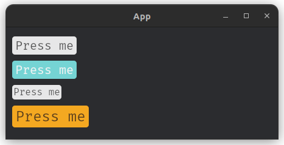
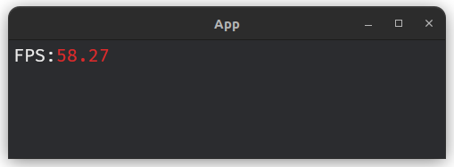
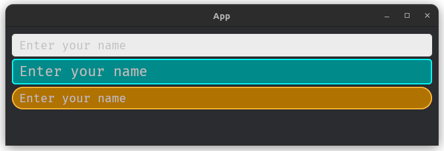

What is Famiq?
Famiq is a UI library wrapped around Bevy UI module by providing default widgets and a simple way to manage styles. Instead of writing Rust code for styling, developers can define styles in a well known JSON file. These styles are then parsed into Bevy's native UI styles, significantly reducing boilerplate code.
Note
- This documentation is for Famiq v0.2.0.
- Documentation for v0.1.0 is here
Simple button
#![allow(unused)] fn main() { let my_btn = builder.fa_button("#my-btn", "Press me", "info", "large"); }
Change background color
{
"#my-btn": {
"background_color": "srgba 0.357, 0.565, 0.941, 0.902"
}
}
Hot reload
Hot-reload can be enabled during development. When it's enabled, every changes in json file will reflect the running app immediately without needing to re-compile the app.
Bevy versions support
Famiq is new and still in early stage of development. Currently, it supports only Bevy 0.14.x and 0.15.x.
| Bevy | Famiq |
|---|---|
| 0.14.x | 0.1.0 |
| 0.15.x | 0.2.0 |
Installation
Famiq can be installed by adding this line into Cargo.toml file.
[dependencies]
famiq = { git = "https://github.com/muongkimhong/famiq", tag = "v0.2.0" }
- Crate and rustdoc are not available yet.
Getting Start
use bevy::prelude::*; use famiq::prelude::*; fn main() { App::new() .add_plugins(DefaultPlugins) .add_plugins(famiq_plugin) // add plugin .add_systems(Startup, setup) .run(); } fn setup( mut commands: Commands, mut builder_resource: ResMut<FamiqWidgetBuilderResource>, // required asset_server: ResMut<AssetServer>, // required ) { // create a widget builder let mut builder = FamiqWidgetBuilder::new( &mut commands, &asset_server, &mut builder_resource, "assets/fonts/some_font.ttf", // font_path "assets/my_styles.json", // style_path true, // hot_reload_styles ); // create simple texts using the builder let hello_boss = builder.fa_text("#boss", "Hello Boss"); let hello_mom = builder.fa_text("#mom", "Hello Mom"); // add texts to container builder.fa_container("#my-container", &vec![hello_boss, hello_mom]); }
font_path: Path to font source file. Must be insideassetsfolder & outsidesrcfolder.style_path: Path to style json file. Must be insideassetsfolder & outsidesrcfolder.hot_reload_styles: Iftrueall changes in json file will reflect running app without needing to re-compile. Should be enabled only during development.
Result

Apply styles
my_styles.json
{
"#mom": {
"color": "srgba 0.961, 0, 0.784, 0.961"
}
}
Result

How styling works?
Instead of writing rust code for styling provided by Bevy UI
#![allow(unused)] fn main() { commands.spawn(( Node { border: UiRect::all(Val::Px(3.0)), padding: UiRect { left: Val::Px(5.0), right: Val::Px(5.0), top: Val::Px(10.0), bottom: Val::Px(10.0) }, margin: UiRect::All(Val::Auto), width: Val::Percent(100.0), ..default() }, BorderColor(Color::srgba(1.0, 1.0, 1.0, 0.3)), BorderRadius::all(Val::Px(5.0)) )); }
you can simply give widget an id, then write styles in json file and any changes made to json file will be reflected to the running app without needing to re-compile the app.
{
"#my-widget-id": {
"padding": "5px 5px 10px 10px",
"border": "3px 3px 3px 3px",
"border_color": "srgba 1.0, 1.0, 1.0, 0.3",
"border_radius": "5px 5px 5px 5px",
"width": "100%",
"margin": "auto auto auto auto"
}
}
How to write styles in json file?
it’s same as bevy styling except that you write it in a string. for example,
#![allow(unused)] fn main() { // bevy -> json background_color: BackgroundColor(Color::srgba(1.0, 1.0, 1.0, 0.3)) "background_color": "srgba 1.0, 1.0, 1.0, 0.3" padding: UiRect { left: Val::Px(10.0), right: Val::Px(10.0), top: Val::Percent(5.0), bottom: Val::Percent(5.0) } "padding": "10px 10px 5% 5%" // left right top bottom (order matters) justify_items: JusitfyItems::Center "justify_items": "center" height: Val::Vw(100.0) "height": "100vw" flex_wrap: FlexWrap::NoWrap "flex_wrap": "no_wrap" }
Supported & Unsupported styles
Unsupported
#![allow(unused)] fn main() { grid_template_rows: Vec<RepeatedGridTrack> grid_template_columns: Vec<RepeatedGridTrack> grid_auto_rows: Vec<GridTrack> grid_auto_columns: Vec<GridTrack> grid_row: GridPlacement grid_column: GridPlacement }
Supported
#![allow(unused)] fn main() { color: Color // can be used for fa_text & TextBundle only font_size: f32 // can be used for fa_text & TextBundle only background_color: BackgroundColor border_color: BorderColor border_radius: BorderRadius visibility: Visibility z_index: ZIndex display: Display position_type: PositionType overflow: Overflow direction: Direction left: Val right: Val top: Val bottom: Val width: Val height: Val min_width: Val min_height: Val max_width: Val max_height: Val aspect_ratio: Option<f32> align_items: AlignItems justify_items: JustifyItems align_self: AlignSelf justify_self: JustifySelf align_content: AlignContent justify_content: JustifyContent margin: UiRect padding: UiRect border: UiRect flex_direction: FlexDirection flex_wrap: FlexWrap flex_grow: f32 flex_shrink: f32 flex_basis: Val row_gap: Val column_gap: Val grid_auto_flow: GridAutoFlow }
Supported Val enum
#![allow(unused)] fn main() { Val { Auto, Px, Percent, Vw, Vh } }
Supported Color enum
#![allow(unused)] fn main() { Color { Srgba(Srgba), LinearRgba(LinearRgba), Hsla(Hsla) } }
Interaction
All widgets provided by Famiq have Interaction component attached by default.
That means all those widgets will emit FaInteractionEvent to bevy's EventReader with either Pressed, Hovered or None.
#![allow(unused)] fn main() { pub struct FaInteractionEvent { pub entity: Entity, pub widget_id: String, pub interaction: Interaction, pub widget: WidgetType, } }
Available widget types
#![allow(unused)] fn main() { pub enum WidgetType { Button, Container, Text, FpsText, TextInput, ListView, ListViewItem, Selection, SelectionChoice, Circular, Modal } }
Handle interaction
You can write a bevy system to handle Famiq’s widgets interaction.
#![allow(unused)] fn main() { fn handle_button_press_system(mut events: EventReader<FaInteractionEvent>) { for e in events.read() { if e.widget == WidgetType::Button && e.interaction == Interaction::Pressed { // handle specific button using its id match e.widget_id.as_str() { "#my-login-btn" => { // do something with login }, "#my-forgot-password-btn" => { // do something with forgot password } _ => () } } } } }
Famiq Widgets
Famiq provides some default widgets that are likely required in any UI development.
Default widgets
FaContainer
🟢 Doesn't need container
🟢 Accepts child/children
An empty and stylyable widget. Think of it as a div inside HTML.
API
#![allow(unused)] fn main() { pub fn fa_container(&mut self, id: &str, children: &Vec<Entity>) -> Entity { // .. } }
usage via builder
#![allow(unused)] fn main() { let container = builder.fa_container(..); }
Return Entity of the widget which can be used as child for another widget.
Example
Texts without container
#![allow(unused)] fn main() { let boss = builder.fa_text("#boss", "Hello Boss"); let mom = builder.fa_text("#mom", "Hello Mom"); }

Texts inside container
#![allow(unused)] fn main() { let boss = builder.fa_text("#boss", "Hello Boss"); let mom = builder.fa_text("#mom", "Hello Mom"); builder.fa_container("#container", &vec![boss, mom]); }

Styling
Example of styling in json file
{
"#container": {
"background_color": "srgba 0.929, 0.918, 0.075, 0.639",
"border_color": "srgba 0.929, 0.918, 0.075, 0.639",
"border_radius": "10px 10px 10px 10px"
}
}

FaButton
🟡 Needs container
🟡 Doesn't accept child/children
Variants
#![allow(unused)] fn main() { pub enum BtnVariant { Default, Primary, Secondary, Success, Danger, Warning, Info, } }
Sizes
#![allow(unused)] fn main() { pub enum BtnSize { Small, Normal, Large, } }
API
#![allow(unused)] fn main() { pub fn fa_button(&mut self, id: &str, text: &str, variant: &str, size: &str) -> Entity { // .. } }
Usage via builder
#![allow(unused)] fn main() { let button = builder.fa_button(..); }
Return Entity of the widget which must be used inside FaContainer widget.
Example
#![allow(unused)] fn main() { // default let my_btn = builder.fa_button("#my-btn", "Press me", "", ""); // info let info_btn = builder.fa_button("#info-btn", "Press me", "info", ""); // small let small_btn = builder.fa_button("#small-btn", "Press me", "", "small"); // warning & large let warning_btn = builder.fa_button("#warning-btn", "Press me", "warning", "large"); builder.fa_container("#container", &vec![ my_btn, info_btn, small_btn, warning_btn ]); }

Handle button press
#![allow(unused)] fn main() { fn handle_button_press_system(mut events: EventReader<FaInteractionEvent>) { for e in events.read() { if e.widget == WidgetType::Button && e.interaction == Interaction::Pressed { // handle specific button using its id match e.widget_id.as_str() { "#my-btn" => { // do something with my button }, "#info-btn" => { // do something with info button } _ => () } } } } }
FaText
🟡 Needs container
🟡 Doesn't accept child/children
API
#![allow(unused)] fn main() { pub fn fa_text(&mut self, id: &str, value: &str) -> Entity { // .. } }
Usage via builder
#![allow(unused)] fn main() { let text = builder.fa_text(..); }
Return Entity of the widget which must be used inside FaContainer widget.
Example
#![allow(unused)] fn main() { let boss = builder.fa_text("#boss", "Hello Boss"); let mom = builder.fa_text("#mom", "Hello Mom"); builder.fa_container("#container", &vec![boss, mom]); }
FaFpsText
🟢 Doesn't need container
🟡 Doesn't accept child/children
API
#![allow(unused)] fn main() { pub fn fa_fps(&mut self, id: &str, change_color: bool) -> Entity { // .. } }
change_coloriftrueit changes color based on number.
Usage via builder
#![allow(unused)] fn main() { builder.fa_fps(..); }
Example
#![allow(unused)] fn main() { builder.fa_fps("#fps", true); }

FaTextInput
🟡 Needs container
🟡 Doesn't accept child/children
Variants
#![allow(unused)] fn main() { pub enum TextInputVariant { Default, Outlined, Underlined, } }
Sizes
#![allow(unused)] fn main() { pub enum TextInputSize { Small, Normal, Large, } }
Resource
Resource to store key value pair of text-input id & its data.
#![allow(unused)] fn main() { pub struct FaTextInputResource { pub inputs: HashMap<String, String>, } impl FaTextInputResource { pub fn update_or_insert(&mut self, id: String, new_value: String) { // .. } } }
API
#![allow(unused)] fn main() { pub fn fa_text_input( &mut self, id: &str, placeholder: &str, variant: &str, size: &str, ) -> Entity { // .. } }
Usage via builder
#![allow(unused)] fn main() { let input = builder.fa_text_input(..); }
Return Entity of the widget which must be used as child of FaContainer widget.
Example
#![allow(unused)] fn main() { let input = builder.fa_text_input("#input", "Enter your name", "", ""); builder.fa_container("#container", &vec![input]); }

Getting input data
The input data can be read from FaTextInputResource within system.
#![allow(unused)] fn main() { fn my_system(input_resource: Res<FaTextInputResource>) { if let Some(data) = input_resource.inputs.get("#my-text-input-id") { println!("Data: {:?}", data); } } }
FaSelection
🟡 Needs container
🟡 Doesn't accepts child/children
Variants
#![allow(unused)] fn main() { pub enum SelectorVariant { Outlined, Default, Underlined, } }
Sizes
#![allow(unused)] fn main() { pub enum SelectionSize { Small, Normal, Large, } }
Resource
Resource to store key value pair of selector id & selected choice.
#![allow(unused)] fn main() { pub struct SelectedChoicesResource { pub choices: HashMap<String, String> } impl SelectedChoicesResource { pub fn update_or_insert(&mut self, id: String, selected_choice: String) { // .. } } }
API
#![allow(unused)] fn main() { pub fn fa_selection( &mut self, id: &str, placeholder: &str, choices: &Vec<String>, label: &str, variant: &str, size: &str, ) -> Entity { // .. } }
Usage via builder
#![allow(unused)] fn main() { let selection = builder.fa_selection(..); }
Return Entity of the widget which must be used as child of FaContainer widget.
Example
#![allow(unused)] fn main() { let plans = builder.fa_selection( "#plans", "Select plan", &vec!["Personal".to_string(), "Team".to_string(), "Enterprise".to_string()], "", "", "" ); builder.fa_container("#container", &vec![plans]); }

Getting selected choice
The selected choice of a selection can be read from SelectedItemsResource within system.
#![allow(unused)] fn main() { fn my_system(selected_items: Res<SelectedItemsResource>) { if let Some(selected_choice) = selected_items.items.get("#my-selection-id") { println!("Choice: {:?}", selected_choice); } } }
FaCircular
🟡 Needs container
🟡 Doesn't accept child/children
Spinning circular.
Variants
#![allow(unused)] fn main() { pub enum CircularVariant { Default, Primary, Secondary, Success, Danger, Warning, Info, } }
Sizes
#![allow(unused)] fn main() { pub enum CircularSize { Small, Normal, Large } }
API
#![allow(unused)] fn main() { pub fn fa_circular(&mut self, id: &str, variant: &str, size: &str) -> Entity { // .. } }
Usage via builder
#![allow(unused)] fn main() { let circular = builder.fa_circular(..); }
Return Entity of the widget which must be used inside FaContainer widget.
Example
#![allow(unused)] fn main() { // default let cir = builder.fa_circular("#cir", "", ""); // warning & small let warning_cir = builder.fa_circular("#warning-cir", "warning", "small"); // primary & large let primary_cir = builder.fa_circular("#primary-cir", "primary", "large"); builder.fa_container("#container", &vec![ cir, warning_cir, primary_cir ]); }

FaModal
🟢 Doesn't need container
🟢 Accepts child/children
API
#![allow(unused)] fn main() { pub fn fa_modal(&mut self, id: &str, items: &Vec<Entity>) { // .. } }
Usage via builder
#![allow(unused)] fn main() { builder.fa_modal(..); }
Show/Hide modal
Modals can be shown or hided by updating FaModalState component.
#![allow(unused)] fn main() { fn show_or_hide_modal_system(mut modal: Query<(&FamiqWidgetId, &mut FaModalState)>) { let should_visible = true; for (id, mut state) in modal.iter_mut() { if id.0 == "#my-modal" && should_visible { state.0 = true; // show } } } }
FaListView
🟢 Doesn't need container
🟢 Accepts child/children
API
#![allow(unused)] fn main() { pub fn fa_list_view(&mut self, id: &str, items: &Vec<Entity>) -> Entity { // .. } }
Usage via builder
#![allow(unused)] fn main() { builder.fa_list_view(..); }
FaImage
🟡 Needs container
🟡 Doesn't accept child/children
API
#![allow(unused)] fn main() { pub fn fa_image(&mut self, id: &str, path: &str) -> Entity { // .. } }
path: Path to image relative toassetsfolder.- Return entity of the widget which must be used as child of
FaContainerwidget.
Usage via builder
#![allow(unused)] fn main() { let image = builder.fa_image(..); builder.fa_container("#container", &vec![image]); }
Example
#![allow(unused)] fn main() { let bevy_logo = builder.fa_image("#bevy-logo", "bevylogo.png"); let falcon = builder.fa_image("#falcon", "falcon.png"); builder.fa_container("#container", &vec![bevy_logo, falcon]); }